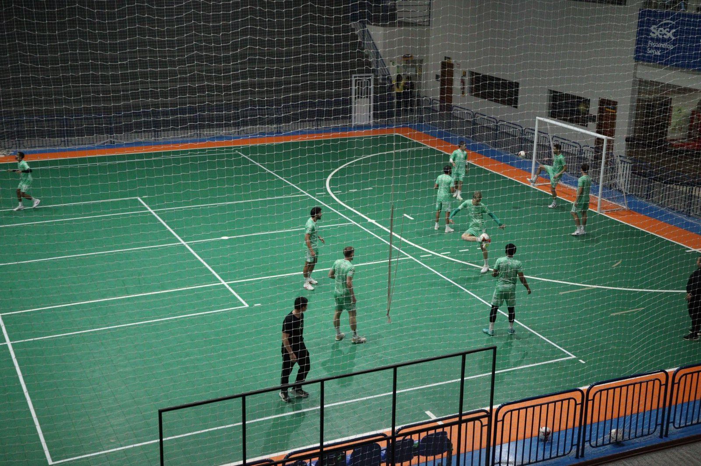
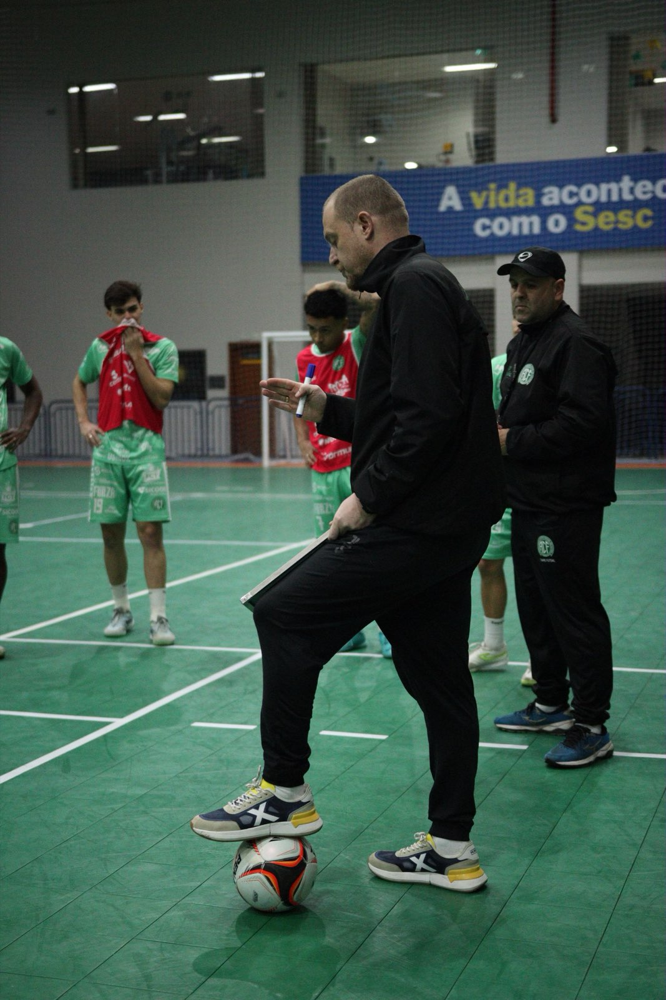
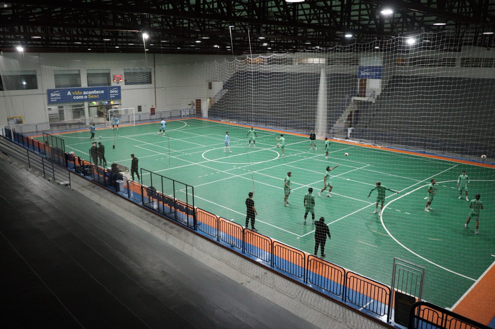

A Prefeitura de Chapecó/Chapecoense/Unochapecó estreia no Campeonato Brasileiro de 2026 neste sábado (4/7), às 16h, contra o Criciúma, no ginásio do SESC, em Chapecó. O confronto reedita decisões históricas do Campeonato Catarinense e marca o início da caminhada do Verdão das Quadras na competição organizada pela Confederação Brasileira de Futebol de Salão (CBFS).
As duas cidades já decidiram o título da divisão de elite do Estadual em duas oportunidades, ambas com vitória de Chapecó. A primeira ocorreu em 1995, com a representação do CRC, e a segunda em 2001, sob o nome de Tozzo/AABB. No único encontro entre os clubes nesta temporada, a Chape Futsal venceu a equipe do Sul do Estado por 4 a 2, fora de casa, na abertura da Série Ouro.

Os anfitriões chegam para o torneio nacional na liderança da Série Ouro e do grupo A da Copa Santa Catarina. Em 2025, a Chapecoense conquistou um histórico terceiro lugar no Campeonato Brasileiro, posição que garantiu a participação inédita na Supercopa do Brasil, disputada em fevereiro passado na cidade de Erechim (RS).
O técnico Leo Schroeder afirmou que o elenco se preparou para a competição e conhece o adversário pelo confronto anterior no Catarinense. O treinador destacou que a partida apresenta dificuldades pela qualidade do Criciúma e apontou a presença da torcida como fator para buscar a vitória na rodada de abertura.

Informações sobre ingressos
- Valores: primeiro lote a R$ 20,00, segundo lote a R$ 25,00 e meia-entrada a R$ 10,00.
- Ação social: exigência de 1 kg de alimento não perecível na entrada, incluindo cortesias e sócios, que será destinado ao programa Mesa Brasil, do SESC.
- Gratuidade: crianças até 12 anos não pagam, mediante apresentação de documento e acompanhadas por responsável.
- Pontos de venda físicos: Loja Oficial da Chape Futsal (na rua Paulo Marques, entre as avenidas Fernando Machado e Porto Alegre) e Loja iXap Sports (na avenida Getúlio Vargas, entre as ruas Paulo Marques e Vitório Cella).
- Venda online: disponível pelo site ingressojogo.com.br.
- Venda no local: bilheterias do ginásio do SESC abrem no período da tarde.
Lote extra de associações
- Quantidade: limite de 100 planos disponíveis para o torcedor.
- Valor: R$ 300,00, com opção de parcelamento em até cinco vezes no cartão de crédito.
- Locais de adesão: Loja Oficial da Chape Futsal.
- Canais digitais: cadastro pelo site chapecoensefutsal.com.br ou pelo WhatsApp (49) 9975-1964.
- Benefícios: sócio ganha uma camisa oficial do time e uma carteirinha para ter acesso livre a todos os jogos em casa nesta temporada. Haverá partidas pelo Brasileiro, Copa Sul, Catarinense Série Ouro e Copa SC.

Esquenta da Chape
- Local: rua lateral do ginásio do SESC, no bairro Jardim Itália.
- Horário de início: abertura do espaço a partir das 12h deste sábado (4/7).
- Objetivo: ponto de encontro para os torcedores antes da estreia às 16h contra o Criciúma.
- Atividades de patrocinadores: instalação de tendas, infláveis e ações de marketing no local.
- Haverá churrasco, pão e caipirinha para o público presente.
- Parceria Classic Uniformes: apoio com o fornecimento e distribuição de pães.
Crédito das fotos: @rogersilva_fotografia/@achapefutsal